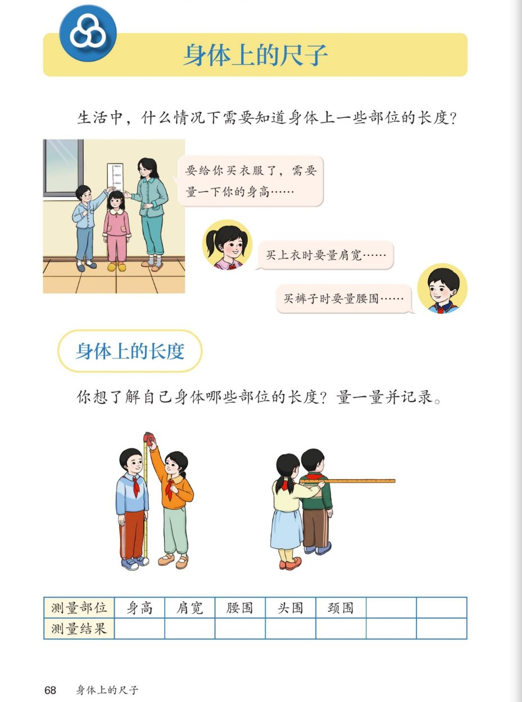

🔊 综合与实践 · 身体上的尺子 · 课本第 68 页 · 单元页
人教版《数学》二年级上册 · 有声图文带读 · 先想后看解析 · 生活中要量身体哪些部位
题数
6
认知
2
强化
3
拓展
1
本页重点
买衣服要量身高 · 肩宽 · 腰围 · 身体上藏着"尺子"
🎧 分两步学：
① 解析教材图片
——纯声音读图，读到哪一块哪一块闪动提示；关键处先倒计时让你思考，再在图片下方给出解析并朗读。
② 分层提问练习
——六道分层题（认知 / 强化 / 拓展），先思考再展开解析、朗读参考答案；这一步不再回到图片。
也可以随时点任意一句话、图上任意一块单独听；点课本文字卡还会展开答案。
教材图片（点块听读，读到哪块哪块闪）

📖 人教版《数学》二年级上册 · 课本第 68 页 · 图片仅供个人学习，版权归人民教育出版社所有
🤔 想一想（点我可跳过）
课本的文字（点句子：听读 + 看答案）
生活场景
为什么买衣服要量身体？
看答案 ▾
买衣服量
身高
——知道衣服做多长；
买上衣量
肩宽
——知道上衣做多宽；
买裤子量
腰围
——知道裤子腰上多大才合身。
小知识
头围、颈围是什么？
看答案 ▾
头围
：头的最粗一圈的长度（买帽子要用）；
颈围
：脖子最粗一圈的长度（做领子要用）；
💡 像这样"围一圈"的长度，要用
软尺
量
量一量
怎样才能量得准？
看答案 ▾
量
身高
：脱鞋站直，从脚底量到头顶；
量
肩宽
：自然站好，从左肩最外量到右肩最外；
两人合作
：一人当测量员，一人当模特，量完再交换。
单元预告
身体上藏着"尺子"
看答案 ▾
身体上天然的"尺子"有：
拃、步、庹、脚
……
没带尺子时它们随时能用；
接下来的活动课我们就来认识这些
身体尺
。
分层提问练习（先想后看解析）
👕
认知
生活中，什么情况下需要知道身体上一些部位的长度？
看解析
🤔 想一想
解析：
买衣服要量
身高、肩宽
，买裤子要量
腰围
；
买帽子要量
头围
，做领子要量
颈围
。
📋
认知
课本表格里要量身体哪些部位？
看解析
🤔 想一想
解析：
五个部位：
身高、肩宽、腰围、头围、颈围
；
量好后把结果填在
测量结果
一行。
📏
强化
量身高的高和肩宽的宽，分别要注意什么？
看解析
🤔 想一想
解析：
量身高：
脱鞋、站直
，从脚底到头顶；
量肩宽：自然站好，从
左肩最外到右肩最外
；
💡 先估一估，再量一量，最后记下来
🤝
强化
为什么课本让两人合作来量？
看解析
🤔 想一想
解析：
有的部位
自己够不着
，比如自己的肩宽、颈围；
一人当测量员、一人当模特，量完
交换
，又快又准。
✏️
强化
你想了解自己身体哪个部位的长度？打算怎么量？
看解析
🤔 想一想
解析：
示例：量身高的高——用
卷尺
，站直从脚底量到头顶；
量头围——用
软尺
，围头的最粗一圈读数；
💡 把结果记进表格，别忘了写单位
🌈
拓展
生活中还有哪些工作需要量身体？
看解析
🤔 想一想
解析：
裁缝
做衣服前先给客人量身；
医生
给小朋友量身高、头围，看发育得好不好；
🌈 量得准，衣服才合身、帽子才戴得上
① 解析教材图片
② 分层提问练习
⏹ 停止
纯声音 + 高亮跟随 · 想好才出解析
← 返回导航